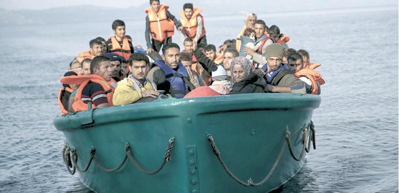

נושאים:
- נושא 1
- נושא 2
- נושא 3
- נושא 4
- נושא 5
- נושא 6
עבדול נאסיר עבר יותר מחודש של התגנבות
דרך גבולות אפגניסטן ואיראן כדי להגיע
לססמה, עיירת חוף טורקית קטנה במרחק שחייה מיוון.
,אבל כשהצעיר בן ה-22 רעד מקור
,במים בבוקר של דצמבר
מאות המטרים האחרונים נראו בלתי אפשריים.
,המים היו קרים
הרוחות חזקות,
והמבריחים שקיבלו ממנו 800 דולר תמורת מקום על סירה נעלמו
